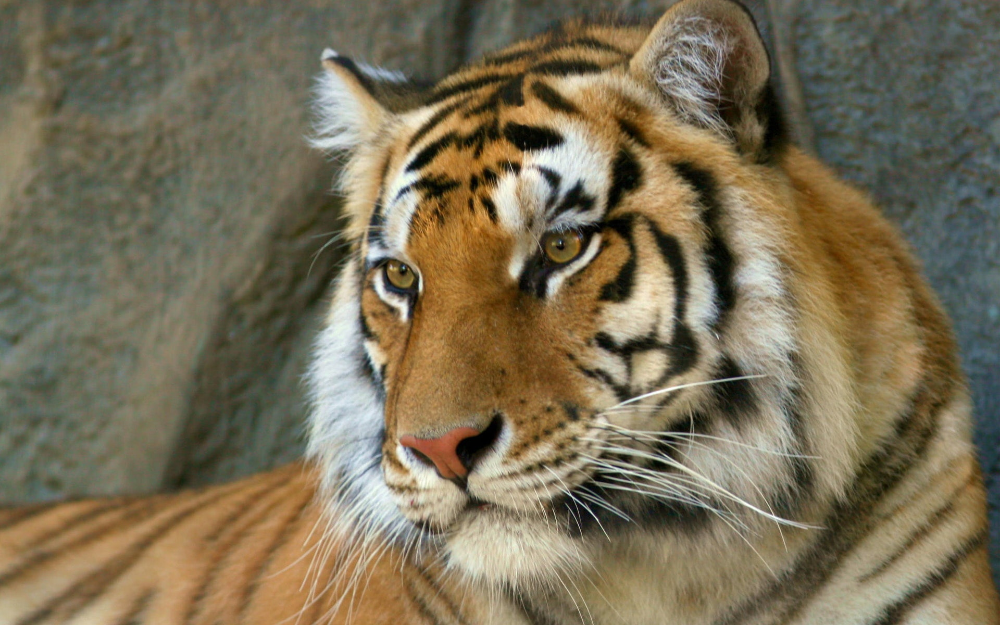
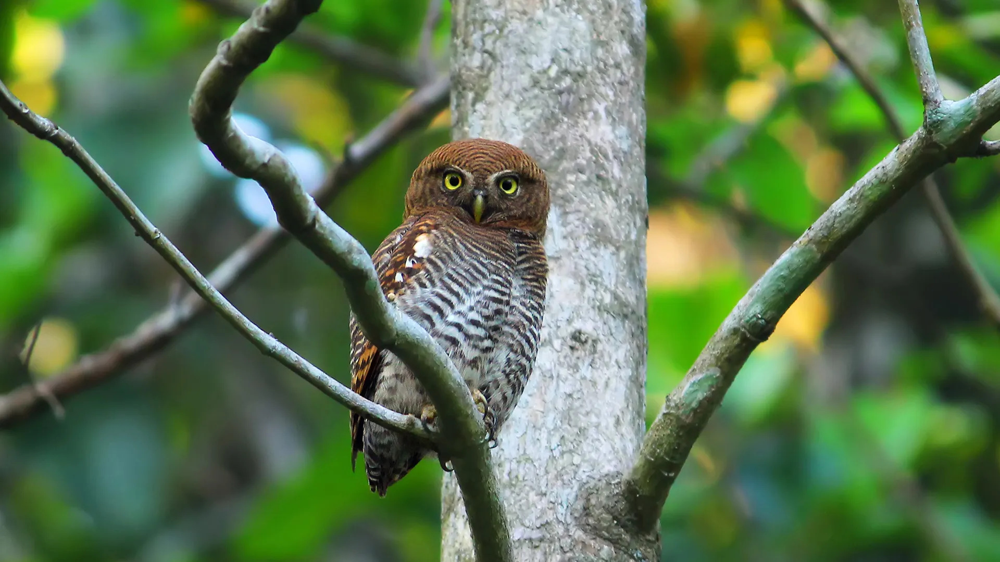
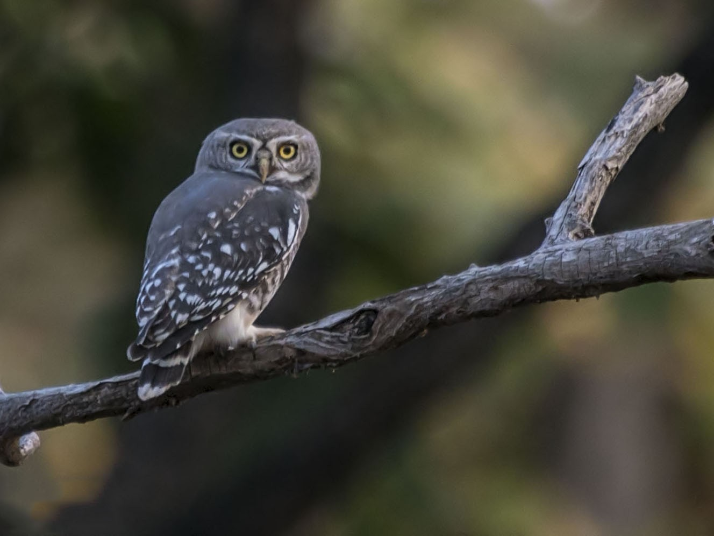
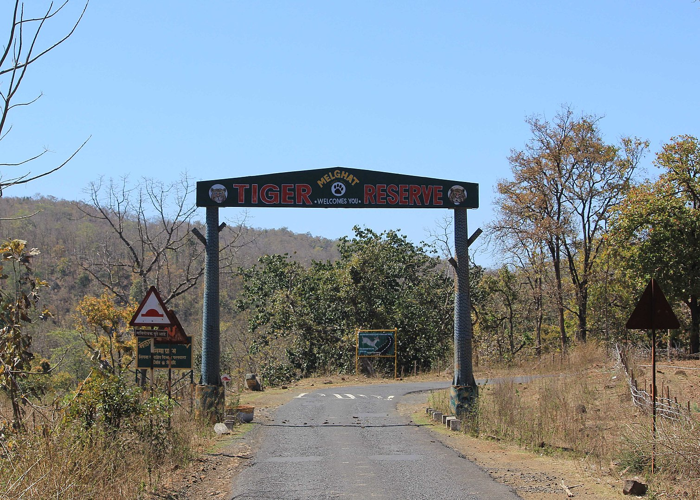
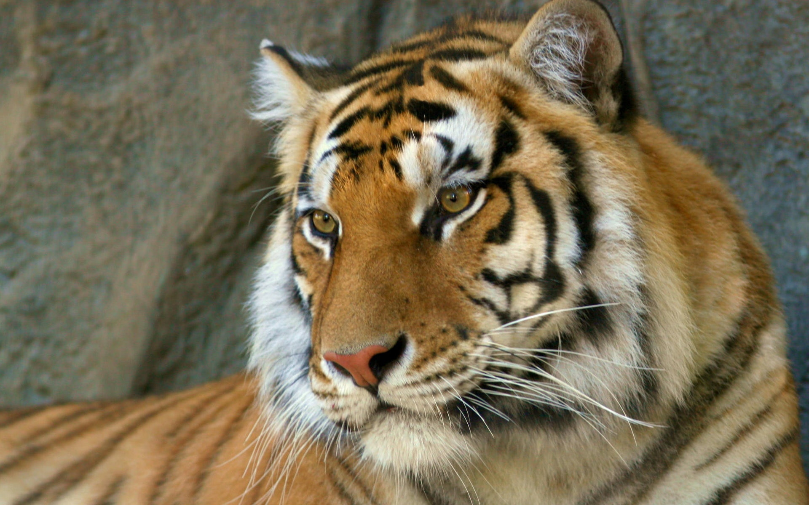
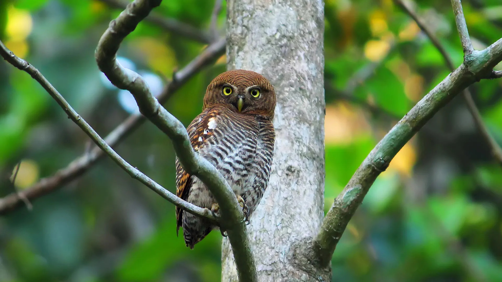
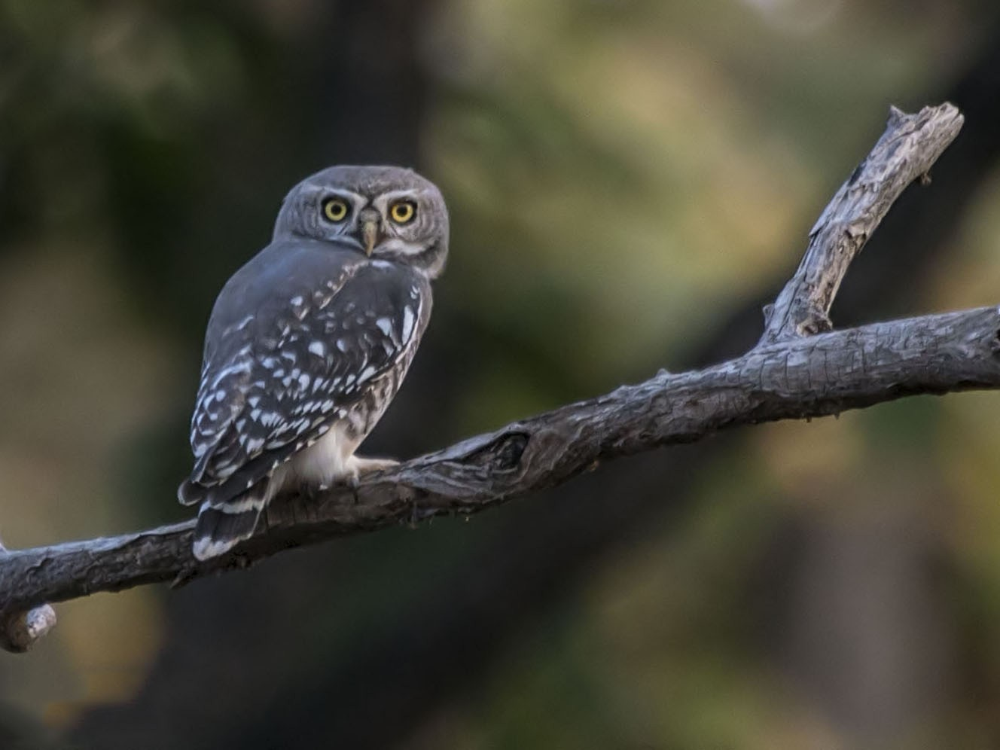
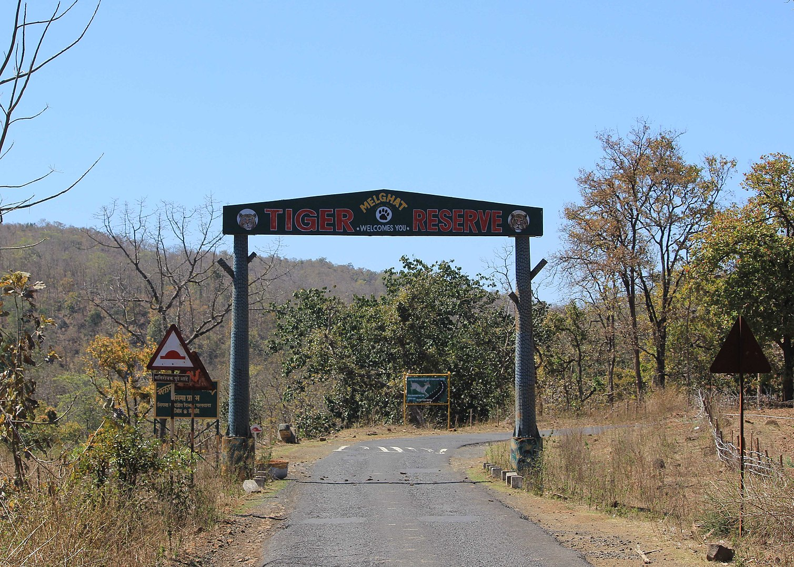

General Information
Melghat was among the first nine tiger reserves of India to be notified in 1973 under Project Tiger. It is located at 21°26′45″N 77°11′50″ECoordinates: 21°26′45″N 77°11′50″E in the northern part of Amravati District of Maharashtra. Melghat Wildlife Sanctuary was declared as in 1985. The Tapti River flows through the northern part of Melghat Tiger Reserve, and forms the boundary of the reserve together with the Gawilghur ridge of the Satpura Range.
Fauna
The main fauna in Melghat are Bengal tiger, Indian leopard, sloth bear, dhole, Indian jackal, sambar, gaur, barking deer, nilgai, chital, chausingha, honey badger, flying squirrel, wild boar, langur, rhesus monkey, indian porcupine, indian pangolin, mouse deer, python, smooth-coated otter and blacknaped hare.
History
There are passes in Melghat that Kings from the north traversed to reach Berar, where the Imad Shahi dynasty had been founded in 1484. The historic forts, Narnala and Gawilgarh, guarded the main east-west ridge. In 1803, in the Second Maratha War, Colonel Arthur Wellesley, who later became the Duke of Wellington, captured the Gawilgarh fort from the Marathas.
Geography
At the northern extreme of the Amravati district of Maharashtra, on the border of Madhya Pradesh, lies the Melghat in the South-western Satpura mountain ranges. Melghat means 'meeting of the ghats', which describes the area as a large tract of unending hills and ravines scarred by jagged cliffs and steep climbs.
The Melghat area was declared a tiger reserve in 1974. The Meghat Tiger Reserve divided into Sipna, Gugamal and Akot Wildlife Division, administratively. Presently, the total area of the reserve is around 1677 km2. In Sipna and Gugamal Wildlife Division, there are more than 10 villages in the core area. In Akot wildlife Division, there are no villages in core area. All villages are rehabilitated in akot wildlife division.
The forest is tropical dry deciduous in nature, dominated by teak (Tectona grandis). The reserve is a catchment area for five major rivers: the Khandu, Khapra, Sipna, Gadga and Dolar. These all rivers are tributaries of the river Tapti.
 






